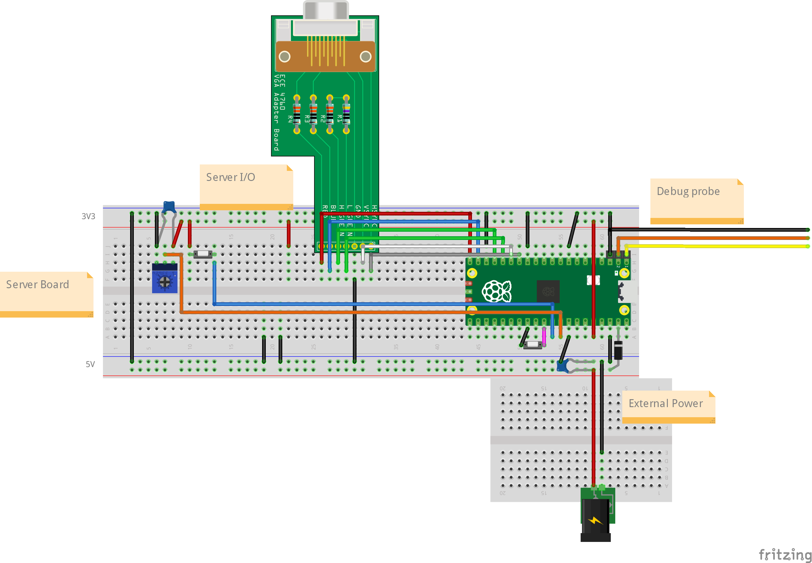
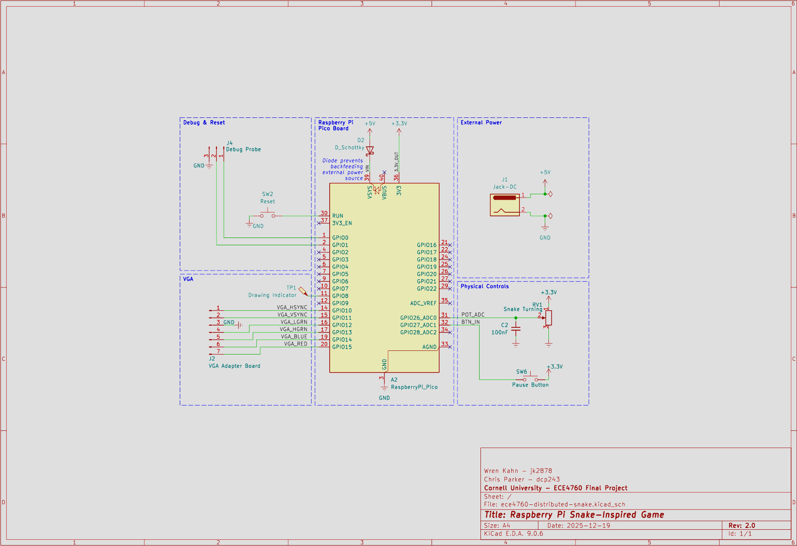
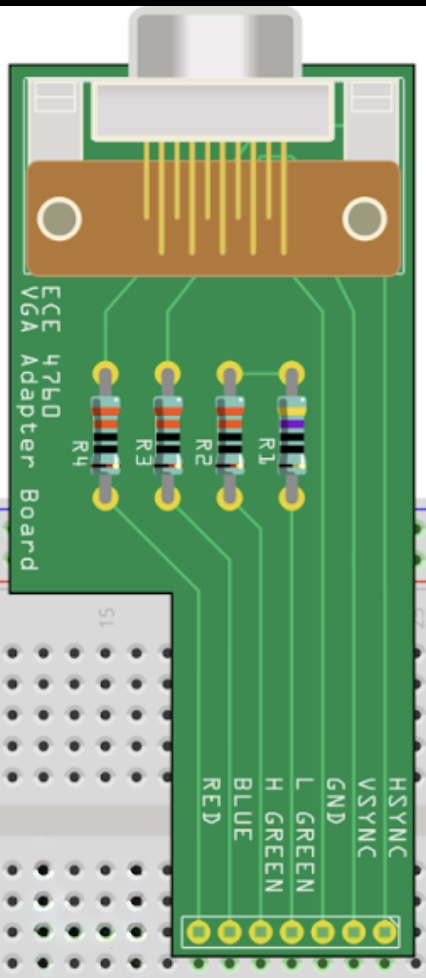
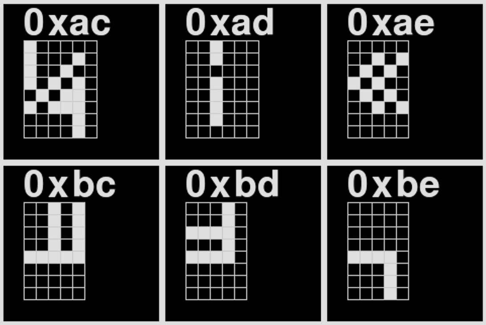
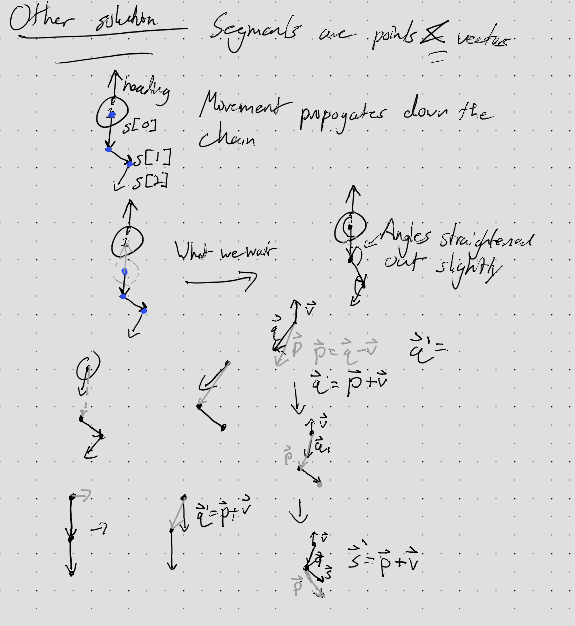
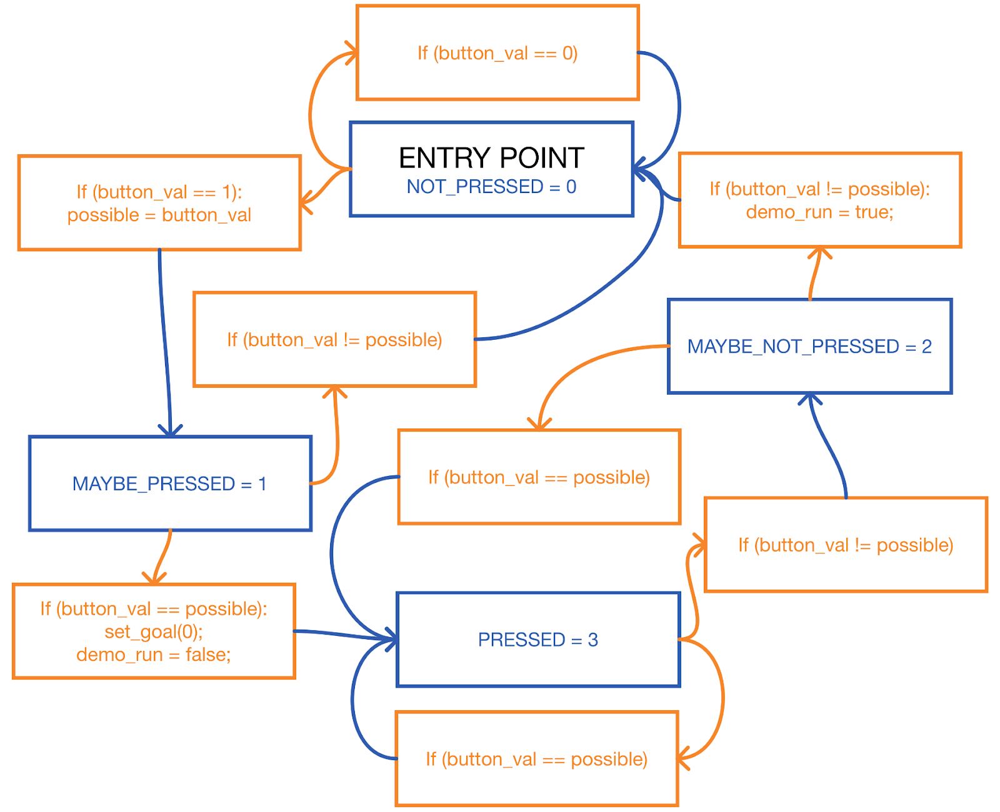

We created a ‘slither.io’ like game which runs on a single raspberry pi pico. Upon game startup there is a set number of active snakes and active pellets on the gameboard. Pellets are stationary green circles which act as ‘food’ for the snakes: when the head of a certain snake comes into contact with a pellet, it ‘eats’ the pellet, causing the pellet to be respawned on the gameboard somewhere else and increasing the score of the snake. At certain score thresholds, the snake will grow a set length, represented by the number of segments on the snake. If a snake head touches ANY part of the body of another snake or any of the walls, it will die causing it to loose all accumulated score and segments as it is respawned in a random location with just one segment.
src (root)
├── .clangd (linting)
├── .gitignore
├── CMakeLists.txt (main CMakeLists, include all subdirs)
├── pico_sdk_import.cmake
├── pt_cornell_rp2040_v1_4.h (protothreads)
├── snake_server.c (main server/game source code)
├── snake_spi.h (constants/definitions for server & agent SPI)
├── snake_state.c (library for tracking and updating snakes)
├── snake_state.h (see above)
├── config (Header only interfaces for configuration/constants)
│ ├── CMakeLists.txt
│ └── game.h (Game parameters)
├── demo (Demos we modify for testing)
│ ├── CMakeLists.txt
│ ├── galton.c
│ ├── spi_test_master.c
│ └── spi_test_slave.c
├── driver (External device drivers)
│ ├── CMakeLists.txt
│ ├── vga.h (Wrapper for the custom VGA library)
│ └── vga
│ ├── CMakeLists.txt
│ ├── font_rom_brl4.h
│ ├── glcdfont.c
│ ├── hsync.pio
│ ├── rgb.pio
│ ├── vga16_graphics_v2.c
│ ├── vga16_graphics_v2.h
│ └── vsync.pio
├── scripts (Any scripts we make)
│ ├── find_freq.py (Brute force testing to find good fractional divider)
│ ├── font_dump.png
│ └── print_font.py (Python impl of drawChar that can generate a font ma)
└── smath (math library)
├── CMakeLists.txt
├── fix.c (fix8,15,21 function implementations)
├── fix.h (fix... macros and definitions)
├── linalg.c (vector and matrix operations, `_in` are in-place)
└── linalg.h (header for above)
Figure: Simplified diagram of the breadboard layout of the project.

Figure: Schematic of the final hardware layout.
Our final hardware design is relatively simple. It consists of the RP2040-based Raspberry Pi Pico board, a custom VGA adapter board, basic controls, and support circuitry to power the board from an external source. This is all contained on one breadboard.
In our design of the game, we focused on having as much work as possible be performed upon game startup. This means that generally we made constants for the amount of snakes or pellets, and other game variables. These constants are stored within game.h, in the config directory.
// Integer pixel values
#define HEAD_RADIUS 4
#define PELLET_RADIUS 2
#define SEGMENT_LEN 3
/* GAMEPLAY STARTING CONDITIONS */
// True/False
#define START_CONTROLLING 0
// Float
#define START_TIMESCALE 1.0f
/* DRAWING CONSTANTS */
// True/False
#define SHOW_SEG_JOINTS 0
#define SHOW_HVEC 1
#define SHOW_VVEC 0
#define SHOW_SID 0
// color_t
#define HVEC_COLOR DARK_ORANGE
#define VVEC_COLOR MAGENTA
#define SID_COLOR WHITE
// color_t
#define BORDER_COLOR WHITE
/* GAME-STATE & PHYSICS */
// Names for SNAKE_SCORE_METHOD
#define SNAKE_ONE 0
#define SNAKE_FIB 1
#define SNAKE_LOG2 2
// 0, 1, or 2 (see above)
// 0 -> 1-to-1, 1 -> Fibonacci sequence, 2 -> log2
#define SNAKE_SCORE_METHOD SNAKE_ONE
// Bounded integers (loosely checked at compile-time)
#define MAX_PELLETS 100
#define MAX_SNAKE_SEGMENTS 250
#define MAX_SNAKES 6
// Fix15
// Distances are in pixels
// Angles are in radians
// Velocities are px/ms
#define SNAKE_SPEED 2000 // px/ms
#define SNAKE_SPEED_MAX 3000 // px/ms
#define SNAKE_SPEED_MIN 1000 // px/ms
#define TURN_SPEED 400 // radiansNote the SNAKE_SCORE_METHOD and associated options. This is the way in which the snake score, ie. the number of pellets which the snake has ‘eaten’ since spawning in, is converted into the length of the snake. The SNAKE_ONE option means that for each pellet that the snake eats, the length of the snake increases by one segment. The SNAKE_FIB option means that the score required for the nth segment is equal to the nth fibbonacci number. The SNAKE_LOG2 option means that the snake will have segment count equal to log(score, base 2).
The smath directory is the math library for basically all of the operations to be performed on non-basic variable types. It contains two major math libraries, one for fixed point integers and another for a 2d vector variable type called hvec2d_t.
The math implementations for basic operations on fixed point integer representations borrow heavily from those provided to us by Hunter. We directly use the provided fix15 operations, alongside implementing a set of operations on fix21. Defined operations include:
In addition we implement a set of pre-defined constants in each fixed point representation:
#define FIX15_MAX INT32_MAX
#define FIX15_MIN INT32_MIN
#define INT2FIX15_MAX 65535
#define INT2FIX15_MIN -1024
// Useful, pre-converted literals
#define PI15 102944 // pi ( <== 3.1416015625 )
#define TAU15 205888 // 2 * pi ( <== 6.283203125 )
#define PI_O_TWO15 51472 // pi/2 ( <== 1.57080078125 )
#define PI_O_FOUR15 25736 // pi/4 ( <== 0.785400390625 )
#define PI_O_18015 572 // pi/180 ( <== 0.0174560546875 )
#define ONEEIGHTY_O_PI15 1877468 // 180/pi ( <== 57.2957763671875 )
#define ONE_O_PI15 10430 // 1/pi ( <== 0.31829833984375 )
#define ONE15 32768 // 1 ( <== 1 )
#define PTONE15 3277 // 0.1 ( <== 0.100006103515625 )
#define PTZEROONE15 328 // 0.01 ( <== 0.010009765625 )
#define FIX15_UNIT 1 // 2^{-15} ( <== 0.000030517578125 )Figure: The set of predefined constants in fix15 representation. We implement the same constants for fix21 representation, though they are omitted for clarity in this writeup.
We use these basic operations on fix15 variables to assemble a math library, linalg.c, for our 2D vector variables. These structs not only store the 2D coordinate components of the vector, but also a third variable which encodes whether this is a point or a vector, something which is useful for our graphics. Below, we will discuss what is implemented by this file.
typedef union hvec2d {
struct {
fix15 x;
fix15 y;
fix15 w;
};
fix15 data[3];
} hvec2d_t;Figure: The definition of the hvec2d_t struct, within the linalg.h file.
//Functions to make a vector or a point with fix15 components
hvec2d_t make_vec(fix15 x, fix15 y);
hvec2d_t make_point(fix15 x, fix15 y);
fix15 fast_dist(fix15 dx, fix15 dy); //A function to quickly compute the length of the difference vector between two points
fix15 vec_dot(hvec2d_t a, hvec2d_t b); //A function to compute the dot product of two vectors
fix15 vec_perp_dot(hvec2d_t a, hvec2d_t b); // ||a x b|| assuming a.w, b.w == 0
fix15 vec_mag(hvec2d_t a); //Unary operation to calculate the magnitude of a vector
fix15 vec_angle(hvec2d_t a); //Unary operation to calculate the angle of a vector from an implicit direction vector of <1,0> = 0 degrees = 0 radians
≈fix15 vec_vec_angle(hvec2d_t a, hvec2d_t b); // ||a x b|| assuming a.w, b.w == 0
hvec2d_t vec_lerp(fix15 alpha, hvec2d_t a, hvec2d_t b); //Linear interpolation for the vector, alpha must be in the range of 0 to 1
// Out-of-place operations
hvec2d_t vec_scale(hvec2d_t a, fix15 scalar);
hvec2d_t vec_div(hvec2d_t a, fix15 scalar);
hvec2d_t vec_normalize(hvec2d_t a);
hvec2d_t vec_homogenize(hvec2d_t a);
hvec2d_t vec_add(hvec2d_t a, hvec2d_t b);
hvec2d_t vec_sub(hvec2d_t a, hvec2d_t b);
hvec2d_t vec_rotate(hvec2d_t vec, fix15 angle);
hvec2d_t vec_apply_matrix( hvec2d_t v, hmat2d_t m);
// In-place operations
void vec_scale_in(hvec2d_t* a, fix15 scalar);
void vec_div_in(hvec2d_t* a, fix15 scalar);
void vec_normalize_in(hvec2d_t* a);
void vec_homogenize_in(hvec2d_t* a);
void vec_add_in(hvec2d_t* a, hvec2d_t b);
void vec_sub_in(hvec2d_t* a, hvec2d_t b);
void vec_rotate_in(hvec2d_t* vec, fix15 angle);
void vec_apply_matrix_in(hvec2d_t* v, hmat2d_t m);Figure: A selection of functions implemented in linalg.c. Though some functions have been omitted, this list can be considered comprehensive in terms of what is actually being used by our code.
For this project we overclocked the PICO to 270MHz. For good performance, this required us to max out the voltage supplied to the CPU.
VREG_VOLTAGE_MAX = VREG_VOLTAGE_1_30, ///< Always the maximum possible voltage
#define SYS_CLOCK_KHZ 270000
vreg_set_voltage(VREG_VOLTAGE_MAX);
set_sys_clock_khz(SYS_CLOCK_KHZ, true);
Figure: Diagram of hardware connection between the RP 2040 and the VGA connector to the monitor. Borrowed from provided class resources: VGA. The HSYNC and VSYNC lines are directly connected to the GPIO pins. This cannot be done with the RGB pins, because they are analog and output a range of 3.3V whereas the display expects a voltage in the range of 0-0.7V. There is 70 ohm resistance to ground in the display, so that resistance and a 330 ohm resistor on each RGB GPIO reduces the voltage to a safe level for the display. In addition, the diagram does not show this, but there is a second GPIO pin connected in parallel to the green analog VGA pin, with a 470 ohm resistor. The higher resistance on the “L GREEN” signal allows a finer range of possible voltages and thus more color detail for greens than is possible with a single 4-bit color. Green is a dominant color in human vision, so we prioritize giving it a larger range of values.

Figure: The course-provided protoboard to interface between the GPIO ports and the VGA header. Note the consistency with the previous diagram: there are TWO DIFFERENT inputs for the green color, labeled H (High) and L (low) which lead to a single green output port on the VGA header.
The following section is directly taken from a previous lab report (Galton Board, PID Helicopter). The specific hardware used in controlling the VGA connection was the same in both labs and this final report.
To transmit VGA data to the external monitor we make use of a provided VGA library (VGA). This library uses three synchronized PIO state machines (hsync.pio, vsync.pio, rgb.pio) to drive the VGA monitor. In addition to the PIO state machines the library includes functions (within vga_16_graphicsv2.c) to draw graphics primitives such as circles, squares, and lines on the VGA in addition to setting single pixels to a color. Furthermore, we make use of library functionality for drawing the standard ASCII 5x7 font on the monitor(glcdfont.c, font_rom_brl4.h).
Before explaining the pin connection system between the VGA header and the GPIO ports, we note some specifics defined in the library. The library defines char values of colors as follows (note that there are 16 possible values for colors):
enum colors {BLACK, DARK_GREEN, MED_GREEN, GREEN, DARK_BLUE, BLUE, LIGHT_BLUE, CYAN,, DARK_ORANGE, ORANGE, YELLOW, , PINK, LIGHT_PINK, WHITE} ; In addition, the GPIO pins are masked as the following:
enum vga_pins {HSYNC=16, VSYNC, LO_GRN, HI_GRN, BLUE_PIN, RED_PIN} ;Pixel color values are stored in a global character array (vga_data_array), and 4 bits are used to store color data for each pixel. This means that each element of the array stores color data for two pixels, allowing the final size of the array to be 640 x 240 = 153600 char values. The VGA pixel clock runs at about 25.172 MHz. It would be a massive drain on compute resources for the CPU to transmit the pixel data of this array at the clock speed required to drive the monitor. Therefore, this is done through the PIO state machines and DMA channels, saving cycles on the CPU.
One of the major issues with overlocking the CPU was that the provided VGA driver library was configured for a clock rate of 125MHz. Furthermore, due to the specifications of VGA design standards, we were required to output pixel data at a constant rate (25.172MHz). Therefore, when overclocking the system, we needed to also change the way in which the system handled this VGA data output. To ensure that the modified cpu clock speed is compatible with the VGA clock speed we had to modify the the PIO state machines which are associated with ensuring that the VGA output timing stays consistent. For HSYNC.pio and VSYNC.pio we use fractional divider to achieve ~25.172MHz. This is basically correct pixel clock, though it adds a minimal amount of jitter. This approach allowed us to implement a single-line change to retain the functionality of the PIO state machines at a completely different cpu frequency.
sm_config_set_clkdiv_int_frac8(&c, 10, 186);For the final PIO state machine, RGB.pio, we increased the pixel holds:
.define pixel1hold 9 ; pixel1hold should be 5 for 150 MHz (4 for 125 MHz)
.define pixel2hold 7 ; pixel2hold should be 3 for 150 MHz (2 for 125 MHz)We increased the delay between the start of the pixel output loop and the first time that the PIO machine will enter the pixel color value output loop:
wait 1 irq 1 [8] ; Wait for vsync active mode (Increased from from 3->8) Finally, we implemented a small fractional clock divider. The original PIO state machine only used an integer clock divider value.
// Small fractional clock div to get closer to perfect timing
sm_config_set_clkdiv_int_frac8(&c, 1, 19) ;We implement some very minor changes to update file structure. The only functional change is in the spacing when drawing chars/strings. The GLCD font which is used in the original code provided by Bruce and Hunter is 5px wide and 8px tall. Included in our project files, in the scripts directory, is a python script named ‘print_font.py’ which prints out the available characters so that they can be viewed. However, drawChar() draws extra empty column on the right of each char and the string writing functions advance the cursor 1 extra column for each character, effectively making chars 6x8 instead of 5x8. Overall, this is great for text readability, but it makes some of the (undocumented) symbolic characters look bad when put together because it creates a 1px gap between lines that should be connected. We added a check in tft_write and drawChar to stop this extra column from being drawn for specific characters: “if (c >= ‘’ && c <= ‘’)” Overall, drawChar now returns before printing that empty line, and tft_write advances the cursor one less step than before.

Figure: Display of the characters included in GLCD font. This set of characters are printed out using the logic of the ORIGINAL drawChar() code.

Figure: Display of the characters included in GLCD font. This set of characters are printed out using the logic of the MODIFIED drawChar() code.

Figure: 6 selected characters from the MODIFIED GLCD font list, the character index for each is listed in just above the diagram of the pixels for that character. Note the column count for character ‘0xad’ and ‘0xae’. There is one less column in the character, displaying the results of the logic change within the drawChar() function.
All elements in this section are contained within the file: ‘snake_state.h’
typedef struct snake {
uint8_t id;
uint32_t score;
#if (SNAKE_SCORE_METHOD == SNAKE_FIB)
uint32_t next_seg_score;
uint32_t last_seg_score;
#endif
hvec2d_t head_pos;
hvec2d_t heading;
hvec2d_t goal_heading;
fix15 speed;
uint16_t num_segments;
segment_t body[MAX_SNAKE_SEGMENTS];
} snake_t;Each snake has a unique ID, head position (point), heading (normalized vector), goal/input heading (normalized vector), speed (scalar), length (int), and list of body segments (array of points). There are also “goal” score that are used for the “Fibonacci” scoring method described below.
typedef struct snake_segment {
hvec2d_t start_pos;
hvec2d_t end_offset;
} segment_t;Segments are made of a start point and a vector to their end point.
typedef struct pellet {
uint16_t id;
hvec2d_t position;
int8_t value;
} pellet_t;Figure: The struct used for storing information about each food pellet in the game. Each pellet has a unique id, a position vector and the option to have a certain value ascribed to it.
There are three different scoring methods that can be used. The first is a basic one-to-one method where each point of the score adds another segment to the snake. The others are a logarithmic method where the snake’s length is determined by the log of its score, and a Fibonacci method where each time a snake reaches a goal score, a segment is added and the goal is added to the last goal.
A comprehensive list of some basic parameters for the snakes:
#define PELLET_RADIUS 3
#define HEAD_RADIUS 5
#define MAX_SNAKE_SEGMENTS 100
#define MAX_SNAKES 1
#define MAX_PELLETS 50
#define SNAKE_SPEED 100
#define TURN_SPEED 5The main initialization function for the actual game board is:
// Initialize the game-state with given board parameters
void snake_game_init(int board_left, int board_top, int board_right,
int board_bottom) {
snake_board_left = int2fix15(board_left);
snake_board_top = int2fix15(board_top);
snake_board_right = int2fix15(board_right);
snake_board_bottom = int2fix15(board_bottom);
origin.x = snake_board_left;
origin.y = snake_board_top;
origin.w = ONE15;
spawn_min_x = board_left + (HEAD_RADIUS * 2);
spawn_max_x = board_right - (HEAD_RADIUS * 2);
spawn_min_y = board_top + (HEAD_RADIUS * 2);
spawn_max_y = board_bottom - (HEAD_RADIUS * 2);
// gs->active_snakes = 0;
// gs->active_pellets = 0;
memset(&snakes, 0, sizeof(snakes));
memset(&pellets, 0, sizeof(pellets));
for (int i = 0; i < MAX_SNAKES; i++) {
snakes[i].id = i + 1;
}
}The set of spawning helper functions is below:
// Spawn one `snake` at (x,y) `position` `angle` rads from x-axis
void snake_spawn(snake_t *snake, hvec2d_t position, fix15 angle) {
snake->head_pos = position;
snake->heading = vec_rotate(xhat, angle);
snake->goal_heading = snake->heading;
snake->num_segments = 0;
snake->speed = SNAKE_SPEED;
memset(snake->body, 0, sizeof(snake->body));
snake->score = 1;
#if (SNAKE_SCORE_METHOD == SNAKE_FIB)
snake->next_seg_score = 1;
snake->last_seg_score = 0;
#endif
snake_add_segment(snake);
}
hvec2d_t rand_bounded_point(fix15 min_x, fix15 min_y, fix15 max_x,
fix15 max_y) {
return (hvec2d_t){rand_fix15(min_x, max_x), rand_fix15(min_y, max_y), ONE15};
}
hvec2d_t rand_spawn_point() {
uint32_t x = (get_rand_32() % (spawn_max_x - spawn_min_x)) + spawn_min_x;
uint32_t y = (get_rand_32() % (spawn_max_y - spawn_min_y)) + spawn_min_y;
return (hvec2d_t){int2fix15(x), int2fix15(y), ONE15};
}
// Spawn all snakes randomly
void snake_spawn_all();
//Spawn all pellets randomly
void snake_spawn_all_pellets();
//spawn a pellet in a specific location
void snake_spawn_pellet(pellet_t* pellet, hvec2d_t position, int8_t value);We have a couple of utility functions:
//A function, to get the snake object associated with a unique snake id number
snake_t *snake_get(int id) { return &snakes[id - 1]; }
//To find the difference between the heading angle and the implicit 0 degree vector of <1,0>
fix15 snake_get_world_angle(snake_t *snake) {
return vec_vec_angle(xhat, snake->heading);
}
//To find the difference between the goal angle and the implicit 0 degree vector of <1,0>
fix15 snake_get_goal_world_angle(snake_t *snake) {
return vec_vec_angle(xhat, snake->goal_heading);
}
// Update snake's heading direction to an absolute angle
void snake_change_angle(snake_t* snake, fix15 world_angle);
// Rotate the snakes heading direction by a certain offset
void snake_turn(snake_t* snake, fix15 angle_offset);
// Set a target heading. If passing in a point, changes goal heading to a normalized vector to target. If passing in a vector, changes goal heading to that vector (MUST BE NORMALIZED)
void snake_target(snake_t* snake, hvec2d_t pt_o_vec);
//A function to get the velocity vector of a certain snake from its current speed and current heading
hvec2d_t find_velocity_vec(fix15 speed, fix15 heading) {
return (hvec2d_t){multfix15(speed, cosfx15(heading)),
multfix15(speed, sinfx15(heading)), 0};
}
//A function to allow us to dynamically change the speed of a snake
void snake_scale_velocity(snake_t *snake, fix15 scalar) {
snake->speed = multfix15(snake->speed, scalar);
}
int snake_check_pellets(snake_t *snake) //A function to check for collisions with a food pellet. If a collision has occurred this will update the total score of the snake and respawn the pellet in a random location.
int snake_check_collision(snake_t *snake) //A function to check for collisions with another snake or wall and update appropriately. It returns -1 for wall collisions, 0 for no collision, and snake ID for a snake collision
//A function to find the closest pellet to a specific snake head
pellet_t* snake_find_closest_pellet(snake_t* snake, hvec2d_t* disp, fix15* dist);
//A function to find the closest snake segment to a specific snake head
snake_t* snake_find_closest_snake(snake_t* snake, hvec2d_t* disp, fix15* dist);
//A poorly named function which basically just finds the closest snake segment for a certain snakeFinally, we will discuss the function which allows us to update the position of the entire snake body based on the amount of time which has passed between physics update ticks:
void snake_update_position(snake_t *snake, fix15 delta_time){}This function begins with the head of the snake. It calculates the angular difference between the goal heading and the current heading. Then, the resulting value is clamped based on the maximum turn speed and the amount of time that has passed since the last physics update. Finally, the heading of the snake is rotated by the clamped angular difference value.
After moving the head, using the NEW position of the head of the snake, we iterate through the subsequent segments of the snake. For each segment:
Overall, this allows segments to remain fixed length while also leading to more natural bending behavior. A diagram of this can be seen below.

The primary AI decision-making function that determines each snake’s movement strategy is:
void snake_ai_choose_goal_fix15(snake_t *me, pellet_t **closest_pellet_to_head,
hvec2d_t *closest_pellet_to_head_displacement, bool is_selected)This function implements a physics-based AI system where snakes are simultaneously attracted to food and repelled by other snakes segments and walls. The algorithm operates by calculating force vectors from each element and combining them to determine the snake’s goal heading. The function begins by establishing tunable parameters that control behavior:
R_SEG_INFLUENCE = int2fix15(80); // Detection radius for other snakes (px)
R_WALL_INFLUENCE = int2fix15(20); // Detection radius for walls (px)
K_FOOD = float2fix15(0.01f); // Food attraction strength
K_SEG_REP = float2fix15(50.0f); // Snake repulsion strength
K_WALL_REP = multfix15(K_SEG_REP, int2fix15(2)); // Wall repulsion (2x stronger)
STRENGTH_MAX_SEG = float2fix15(80.f);
STRENGTH_MAX_WALL = multfix15(STRENGTH_MAX_SEG, int2fix15(2));
MAX_REP_MAG = float2fix15(400.0f);The food attaction vector calculation is done using a single target pellet at a time. The function calls snake_find_weighted_pellet() to select ONE target pellet whereupon a normalized attraction vector is calculated pointing toward it and scaled by the food attraction magnitude K_FOOD. During testing we noticed that some snakes might get caught chasing one pellet for too long without making progress, such as when another snake is also aiming for the same pellet nearby. This can lead to positional deadlock between two or more snakes, and is remedied by eventually banning that pellet for a short period of time:
pellet_t *snake_find_weighted_pellet(snake_t *snake, hvec2d_t *disp,
fix15 *dist) {
pellet_t *best_pellet = NULL;
hvec2d_t best_disp = {0, 0, 0};
fix15 best_dist = 0;
fix15 best_score = FIX15_MAX; // Lower score = better pellet
fix15 my_score = FIX15_MAX;
// Evaluate each pellet
for (int p = 0; p < MAX_PELLETS; p++) {
pellet_t *plt = &pellets[p];
hvec2d_t disp_to_pellet = vec_sub(plt->position, snake->head_pos);
fix15 my_dist = vec_mag(disp_to_pellet);
if (my_dist > best_score) continue; //Omit if too far away
if (avoid_pellet_id[snake->id - 1] == plt->id) {
if (avoid_pellet_counter[snake->id - 1] > 0) {
avoid_pellet_counter[snake->id - 1]--;
continue; // skip
} else {
avoid_pellet_id[snake->id - 1] = 0; // Clear when counter expires
}
}
// Calculate base score from distance (closer = lower score = better)
my_score = my_dist;
// Add penalty for other snakes being close to this pellet
for (int s = 0; s < MAX_SNAKES; s++) {
snake_t *other_snake = &snakes[s];
if (other_snake == snake) continue;
hvec2d_t other_snake_disp = vec_sub(plt->position, other_snake->head_pos);
fix15 other_dist = vec_mag(other_snake_disp);
// If other snake is closer to this pellet, heavily penalize it
if (other_dist < my_dist) {
fix15 penalty = multfix15(my_dist - other_dist, int2fix15(3)); // 3x penalty
my_score += penalty;
}
// Add smaller penalty for other snakes being nearby
if (other_dist < int2fix15(60)) {
fix15 proximity_penalty = divfix15(int2fix15(30), other_dist + ONE15);
my_score += proximity_penalty;
}
hvec2d_t other_heading_to_pellet = vec_normalize(other_snake_disp);
fix15 heading_alignment = vec_dot(other_snake->goal_heading, other_heading_to_pellet);
// Check if other snake is moving toward this pellet
if (heading_alignment > float2fix15(0.7f) && other_dist < int2fix15(80)) {
fix15 competition_penalty = multfix15(heading_alignment, int2fix15(20));
my_score += competition_penalty; // If so, add penalty
}
}
// Update best pellet if this one has a better (lower) score
if (my_score < best_score) {
best_score = my_score;
best_pellet = plt;
best_disp = disp_to_pellet;
best_dist = my_dist;
}
}As for the repulsion from other snake segments, the algorithm first handles repulsion from other snake heads using a 4x multiplier to prevent direct collisions. This is important because the heads of the snake are by far the most erratic part of the snake, and snakes need to give each other a wide berth so that they don’t crash into each other. After working on the heads, the function iterates through each segment of every other snake, calculating the distance from the current snake’s head to each segment. Finally, the distance to each segment is used to weight a repulsion vector (dir_away) pointing away from that segment by the inverse square value of the distance measure after it has been linearly scaled. The repulsion vector magnitude is clamped. The distance from the current snake’s head to each segment is calculated using distance_point_to_segment_fix15():
fix15 distance_point_to_segment_fix15(hvec2d_t p, hvec2d_t a, hvec2d_t b, hvec2d_t *dir_away)
{
hvec2d_t ab = vec_sub(b, a);
fix15 dist_ = vec_mag(ab);
fix15 ab2 = multfix15(dist_, dist_); // ab squared
// t in [0,1] along segment in fix15
hvec2d_t pa = vec_sub(p, a);
fix15 num = vec_dot(pa, ab);
fix15 t = divfix15(num, ab2); // dimensionless
// Clamp t to [0, 1]
if (t < 0) t = 0;
if (t > ONE15) t = ONE15;
// closest = a + ab * t
hvec2d_t ab_t = vec_scale(ab, t);
hvec2d_t closest = vec_add(a, ab_t);
// away = p - closest
*dir_away = vec_sub(p, closest);
fix15 d = vec_mag(*dir_away);
return d;
}For walls, the snake_wall_repulsion() helper function is called for each of the four walls. The distance to wall weighting basically functions the same as the distance to snake segment weighting:
void snake_wall_repulsion(fix15 dist_wall, hvec2d_t normal, fix15 offset, hvec2d_t *repulse){
if (dist_wall < R_WALL_INFLUENCE) {
dist_wall = multfix15(dist_wall, WALL_D_SCALE);
fix15 d_plus = dist_wall + ONE15;
if (d_plus <= 0) d_plus = ONE15;
fix15 inv_d = divfix15(ONE15, d_plus);
fix15 inv_d2 = multfix15(inv_d, inv_d);
fix15 base = inv_d2 - offset;
if (base < 0) base = 0;
fix15 strength = multfix15(K_WALL_REP, base);
if (strength > STRENGTH_MAX_WALL)
strength = STRENGTH_MAX_WALL;
hvec2d_t contrib = vec_normalize(normal);
contrib = vec_scale(contrib, strength);
vec_add_in(repulse, contrib);
}
}After clamping the total repulsion magnitude to prevent excessive forces, the function adds the attraction and total repulsion vectors. However, if the repulsion magnitude exceeds a threshold magnitude (50.0f), the snake will completely ignore the food attraction vector; planning its next move only using the repulsion from danger. The desired direction vector is normalized and passed to snake_target() to set the snake’s new goal heading. This approach creates emergent behaviors where snakes spread out to avoid competition, maintain safe distances from walls and each other, and pursue food when safe.
This project uses both cores of the Pico, and makes heavy use of the course’s modified version of the protothreads library developed by Adam Dunkels. Before getting into the discussion of how the central gamestate and graphics protothreads work, we first cover some of the supplementary protothreads (those which are either entirely supportive to, subordinate to, or not necessary for the function of: the central protothreads)
Blinks the LED continuously. Just helps to show that the Pico is turned on/connected to power/running. Not necessary for any part of the design.
This thread handles any and all serial communications with the Pico post-initialization. The thread initially sends a message instructing the user how to access the full list of commands:
sprintf(pt_serial_out_buffer, "\n\nEnter `h[elp]` to get a list of commands!\n");
serial_write;After sending the instruction message once, the protothread enters into an infinite polling loop which reads in whatever is in the serial FIFO before acting upon it. The serial input handling is performed by accepting a set of single letters which then trigger specific functionality. Our implementation uses a single switch statement, which is passed the return value of the serial read, to ensure that only one action can be performed at a time. At the end of the switch statement the thread is yielded for at least 10ms. Functions which accept a value we range-check before updating associated variables. We list the accepted letters and their corresponding functionality below:
static const char help_text[] =
"Commands:\n"
"\th : Show this text\n"
"\tq : Pause the game\n"
"\ti : Show snake IDs (SID)\n"
"\tt <float> : Set the time scale to <float> (<float> > 0)\n"
"\tc <int> : Control snake with ID <int> until you press another key"
"(0 < <int> < " XSTR(MAX_SNAKES) ")\n"
"\ts <int> : Select snake with ID <int> and print info until you press"
" another key (0 < <int> < " XSTR(MAX_SNAKES) ")\n"
"\tp <int> : Select pellet with ID <int> and print info until you press"
" another key (0 < <int> < " XSTR(NUM_PELLETS) ")\n\n\0";Because our game does not take up the entire VGA screen space, this protothread will only clear the space which we are drawing onto. This includes the text box on the left and the game screen on the right.
This thread sets up the ADC hardware for the potentiometer. This includes initializing the hardware peripheral and the physical GPIO pin, setting up the ADC fifo and linking the fifo to the GPIO port. The state of the potentiometer is stored using 5 variables:
static uint32_t pot_accum = 0;
static uint8_t fifo_samples;
static uint16_t pot_val = 0;
static uint16_t old_pot_val = 0;
static fix15 snake_angle = 0;The thread also sets up the Button which includes initializing the physical gpio, setting it as an input, and ensuring that the gpio is pull down. The state of the button is stored at all times using three variables:
debounce_state = NOT_PRESSED;
possible = false;
static bool i;Once these two hardware peripherals are set up, the thread then enters into an infinite loop which collects sample information from the button and the potentiometer. We first discuss the state machine for the button press handling, then the way in which the potentiometer is handled:

Figure: Button press state diagram with debounce functionality. While the actual code uses a variable named “i” to store the gpio read value, this diagram renames that variable to button_val for readability.
Unlike the button, the potentiometer has been set up such that the GPIO port is directly linked to the ADC which has FIFO storage for the last few samples of the port. Each sampling loop, the accumulator and sample count variables are set to 0 before all samples in the ADC FIFO are summed into the accumulator variable. The average value of the samples is computer and then clamped to ensure that it is within an acceptable range. Finally, this clamped value is then converted into fix15 representation and converted into an angle from a ADC value before being converted into a percentage value which is stored in a global variable: man_snake_angle. This global variable replaces the algorithmic selection of a new heading each physics update for that manually controlled snake.
This thread begins by setting up some of the variables used for tracking progress throughout updating the pixels for each frame:
//Init the redraw flag
full_redraw_f = false;
// Timekeeping
static uint8_t frame = 0;
time_elapsed_s = 0;
time_elapsed_ms = 0;
// Variables for maintaining frame rate
static absolute_time_t loop_start_time;
static absolute_time_t loop_end_time;
static uint32_t begin_time;
draw_time = 0;
static char frame_rate[16]; // 15 char string for displaying frame rate
// Default for drawing is white on black background w/ smallest text size
setTextColor2(WHITE, BLACK);
setTextSize(1)After initializing the important variables, the thread then enters an infinite loop, where one cycle through that loop contains all processes needed for each individual frame update.
At the beginning of each iteration through the loop is a check to the ‘restart_graphics’ flag, which restarts the entire protothread — reinitializing state tracking variables. This is useful for during execution changes to game execution such as those contained within Protothread Serial. In addition, the thread uses SDK supported MUTEX to ensure that race conditions between the Gameloop Protothread on CORE 1 and this Protothread on CORE 0 do not occur.
After passing the checks and acquiring the MUTEX, the thread waits for the gpio attached to VSYNC to be set high. This is important because it signals to the PICO when it is safe to overwrite pixel data such that a race conditions with the DMA is avoided. Immediately, the thread saves the current time (stored in the variable ‘loop_start_time’) and begins the following processes (in order, top to bottom):
The thread then checks if the current frame is divisible by 8, if so the current frame rate is calculated and displayed in the top right of the VGA display.
The graphics thread has now reached the portion where it will redraw the actual game board. First the entire game board, and a 1 pixel border around it is set to black before the 1px thick border is redrawn. Using MUTEX, the thread waits for Core 1 to finish calculating the pellet information in the Gameloop protothread:
PT_SEM_SDK_WAIT(pt, &done_calc_pellets);Then, for each pellet in play, the thread checks if the system has a manually controlled snake AND if that pellet has been selected for tracking (this must be done through the serial protothread). If both conditions are true then the pellet is drawn in red, otherwise it is drawn in light blue.
drawCircle(fix152int(pellets[i].position.x){
fix152int(pellets[i].position.y), PELLET_RADIUS, pellet_color);
}After the pellets have been drawn the thread signals this using MUTEX and waits until the Gameloop Protothread is done updating the positions of snakes:
PT_SEM_SDK_SIGNAL(pt, &done_draw_pellets);
PT_SEM_SDK_WAIT(pt, &done_calc_snakes);The thread draws one snake at time, iterating through the list of active snakes one by one. The code checks if the snake is manually controlled:
void draw_segments(snake_t *snk) {
segment_t *seg;
color_t snake_color = MED_GREEN;
color_t snake_color_alt = snk == selected_snake ? GREEN : DARK_GREEN;
for (int i = 0; i < snk->num_segments; i++) {
seg = &snk->body[i];
if (seg->start_pos.x < int2fix15(board_left) ||
seg->start_pos.x > int2fix15(board_right) ||
seg->start_pos.y < int2fix15(board_top) ||
seg->start_pos.y > int2fix15(board_bottom))
break;
draw_vec(seg->start_pos.x, seg->start_pos.y, seg->end_offset, snake_color);
snake_color = snake_color == MED_GREEN ? snake_color_alt : MED_GREEN;
#if SHOW_SEG_JOINTS
fillCircle(fix152int(seg->start_pos.x), fix152int(seg->start_pos.y), 1,
WHITE);
#endif
}
#if SHOW_SEG_JOINTS
fillCircle(fix152int(seg->start_pos.x + seg->end_offset.x),
fix152int(seg->start_pos.y + seg->end_offset.y), 1, WHITE);
#endif
}The thread then takes the current time, and calculates the time spent in this thread for this single frame by subtracting it from the current time at the start of the thread. To prevent unnecessary waiting in the gameloop protothread the graphics protothread then yields for nearly the entire remaining time for calculating the frame.
This protothread makes heavy use of the functions defined within snake_state.c so as to be more readable and easier to edit. The whole initialization code is below:
PT_BEGIN(pt);
PT_MUTEX_SDK_AQUIRE(pt, &state_m);
pstate = INIT;
static absolute_time_t loop_start;
static fix15 dt_ms_loc = 1;
loop_start = get_absolute_time();
snake_game_init(board_left, board_top, board_right, board_bottom);
snake_game_start(MAX_SNAKES, MAX_PELLETS);
pstate = ACTIVE;
PT_MUTEX_SDK_RELEASE(&state_m);
PT_SEM_SDK_SIGNAL(pt, &draw_start);
PT_SEM_SDK_SIGNAL(pt, &done_calc_pellets);
PT_SEM_SDK_SIGNAL(pt, &done_calc_snakes);
PT_SEM_SDK_WAIT(pt, &done_draw_snakes);After init, the thread enters an infinite loop, where the physics updates for the entire frame will occur within a single iteration. The thread will not perform any physics update without the game state, held in pstate, set as active. If the game is active, the thread immediately saves the current time so as to track the time needed to finish all physics updates.
The physics updates happen in stages, and the order matters for correct physics execution:
Special mode: Human takeover - Snakes start in agent controlled mode. Each snake would be a different color. We would keep this simple by only having 4-6 snakes. At any point in time, a button can be pressed triggering human takeover of the associated snake. This is done with a pause to the game, where the snake to takeover flashes between its current color and white then current color, then white and finally back to the current color. Due to the inclusion of multiple human control, and the jankiness we would decrease Dt and the physics update rate, perhaps to half speed. The potentiometers should be polled using a timer triggered interrupt for consistency, do this at maybe 300hz and use a digital low pass filter to decide the actual direction to store at any time.
We spent quite a few hours attemping SPI communication with one main server PICO and subsidiary agent PICO boards. The idea was that the agents would take over the role of calculating the next snake goal heading between each physics update. We developed a communication protocol for this and set up the physical hardware connections necessary for direction communication between the PICO boards. However, spi communication gave us many issues and after many days of work we found out that we would need to completely refactor much of our communication code to make it work. The major challenge revolved around setting SPI in the right mode (phase and polarity) and also dealing with issues mainly stemming from using slave mode SPI on the PICO. Unfortunately we did not have time to complete this before the demo date.
The high level explanation of what would need to occur follows: Communication Structure
The code that we created for the SPI communication had the following structure: - On the agent pico, the CS pin is tied to a hardware interrupt, allowing rapid response to a request from the server. - The interrput has a state machine which expects either a header or a body. The meassage structure is in the form header-body-header-body… - The first message is expected to be a header. The following message body should contain initialization information about which snakes that agent is controlling, how many snakes and pellets are in play and other parameters. - By analyzing the header content after recieving it, the agent will have time to prepare for the structure of the subsequent message body. During the waiting period the agent should: prepare a predefined message type struct to be filled with information. - If it’s a broadcast: (server will wait a small amount of time before initiating the continuous broadcast). Upon the interrupt following delivery of the message header, the agent should initiate a blocking read to fill the struct with an expected number of reads provided in the message header - If it’s a request/init: The agent will immediately fill the tx buffer with info to transmit, server will grab this when it wants.
A list of resources detailing issues with running the SPI in slave mode on a PICO:
https://github.com/raspberrypi/pico-examples/blob/master/spi/spi_master_slave/spi_slave/spi_slave.c
The code here uses the default mode 0 for spi communication. This is known to have issues, especially when reviewing more recent threads about spi slave functionality. The exact reasoning as for why is unknown.
Add PIO SPI slave example · Issue #115 · raspberrypi/pico-examples
PICO only only recieves first byte of SPI message - Raspberry Pi Forums
pico-examples/spi/spi_master_slave at master · raspberrypi/pico-examples
SPI slaves hi-Z their I/O when CS is not asserted and have no impact on the bus whatsoever.
Mode 0 (polarity 0 and phase 0) requires the slave to correctly latch data immediately on the first active edge after CS goes low. But, if the slave has even a small internal delay (clock domain crossing, synchronizer delay, etc.), the very first sampled bit can be unstable. This can corrupt the entire frame after the first byte, since the internal shift-register alignment breaks.
In mode 3 (polarity 1 and phase 1):
CS goes low
Clock idles high
First edge is falling (ignored for sampling)
Slave has a whole half-cycle before the rising edge where sampling really happens.
This removes the critical timing pressure on the slave and allows multi-byte transfers to work. This is a known PL022 quirk in slave mode.
SPI
If doing a broadcast message, all slaves will need to disable their output unless actively outputting
RP2040 is not configured to allow tri-stating the SPI TX
Have to use OEOVER GPIO register to disable output separately to peripheral config
Might cause issues with a basic DMA setting
Could chain DMA so SPI triggers a channel that either enables or disables output and then triggers actual DMA